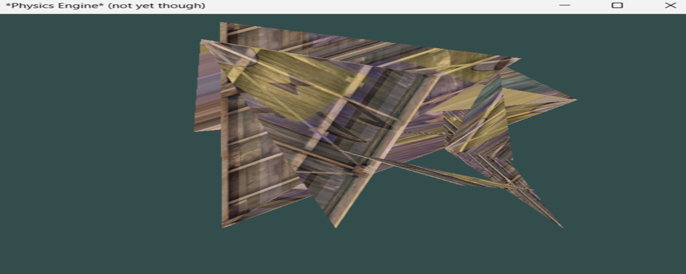
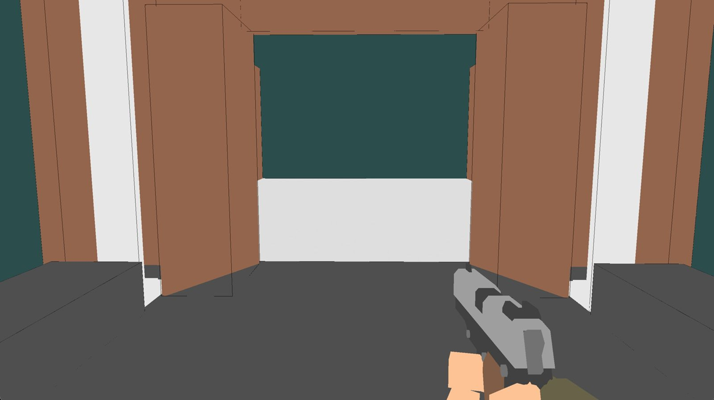

OpenGL
This project was for our school’s PWS, where you and a partner work together for a decent amount of time to create something. My partner and I wanted to make a physics engine basically from scratch, because we thought it could be a fun challenge (spoiler: it wasn’t really). And then we decided to just make it a game so we actually had a use for the physics that we were going to make, and so the game idea we came up with was a robbery shooter type game, where you rob and shoot things.
Beginnings
So this started with us both learning how OpenGL worked, because we wanted to use it for our rendering. This went about as well as could be expected from two people who haven’t really coded with OpenGL and C++ before, which can be seen in the screenshots below.
End product
And at the end of our project we had: basic movement (excluding jumping), collision detection, basic shooting, and some models and other environmental stuff. For the movement we used WASD, for the collisions we used AABB collision detection, and for the shooting we used projectile ballistics type projectiles. And in this singular screenshot below you just have to imagine all those things coming together.
